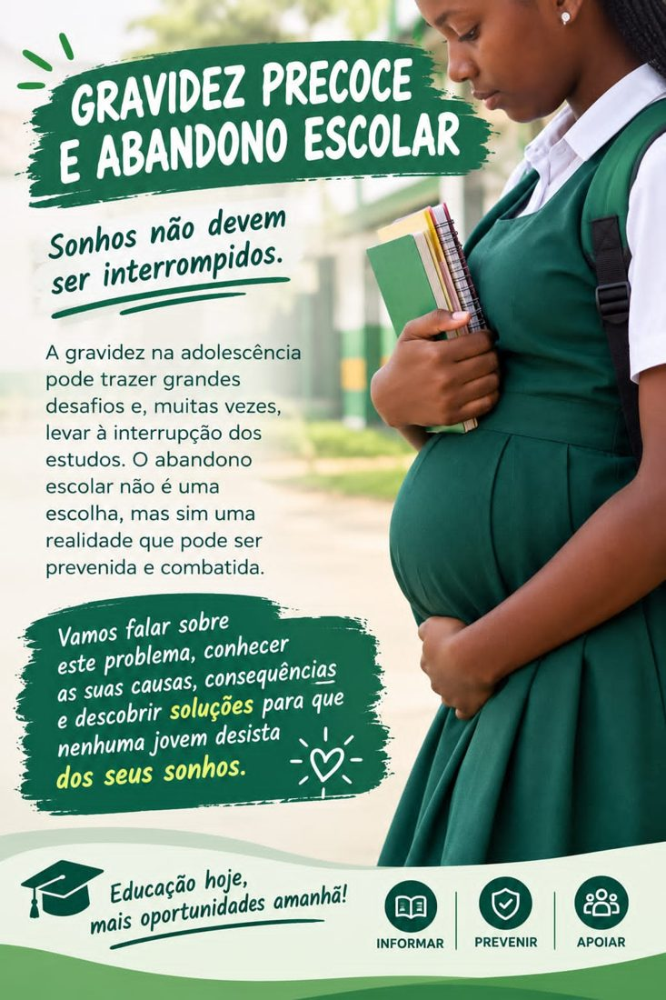
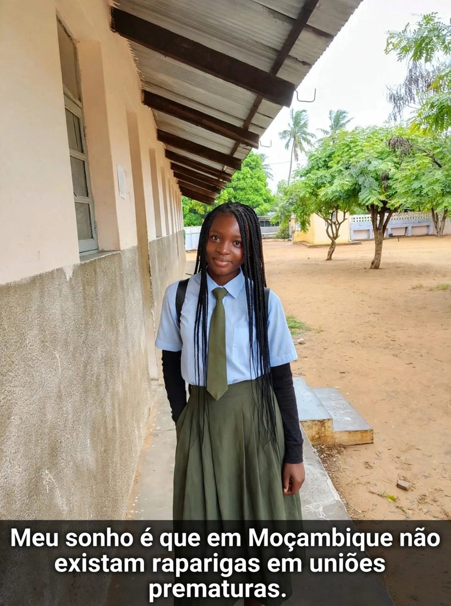

Sobre este website
Este website educativo foi desenvolvido pelo 1.º grupo da turma B02 da 12.ª classe da Escola Secundária Marien Ngouabi. Queremos falar sobre este problema, conhecer as suas causas e consequências e descobrir soluções para que nenhuma jovem desista dos seus sonhos.
Escola Secundária Marien Ngouabi
Turma B02 · 12.ª classe
Turma B02 · 12.ª classe

INFORMARPREVENIRAPOIAR
Explore o website
Os nossos sonhos
Mensagens de uma estudante da nossa escola sobre o futuro que queremos para as raparigas de Moçambique.
